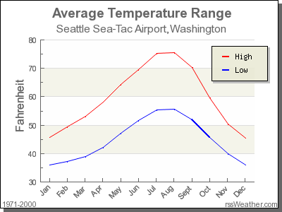
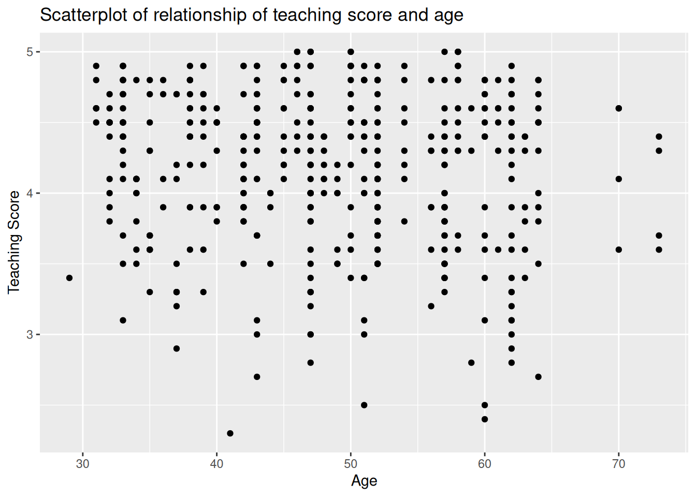

library(dplyr)
library(ggplot2)Appendix C — Learning check solutions
C.1 Chapter 1 Solutions
(LC 1.1) Repeat the above installing steps, but for the dplyr, nycflights13, and knitr packages. This will install the earlier mentioned dplyr package, the nycflights13 package containing data on all domestic flights leaving a NYC airport in 2013, and the knitr package for writing reports in R.
(LC 1.2) “Load” the dplyr, nycflights13, and knitr packages as well by repeating the above steps.
Solution: If the following code runs with no errors, you’ve succeeded!
library(dplyr)
library(nycflights13)
library(knitr)(LC 1.3) What does any ONE row in this flights dataset refer to?
- A. Data on an airline
- B. Data on a flight
- C. Data on an airport
- D. Data on multiple flights
Solution: This is data on a flight. Not a flight path! Example:
- a flight path would be United 1545 to Houston
- a flight would be United 1545 to Houston at a specific date/time. For example: 2013/1/1 at 5:15am.
(LC 1.4) What are some examples in this dataset of categorical variables? What makes them different than quantitative variables?
Solution: Hint: Type ?flights in the console to see what all the variables mean!
- Categorical:
carrierthe companydestthe destinationflightthe flight number. Even though this is a number, its simply a label. Example United 1545 is not less than United 1714
- Quantitative:
distancethe distance in milestime_hourtime
C.2 Chapter 2 Solutions
library(nycflights13)
library(ggplot2)
library(dplyr)
library(knitr)
library(moderndive)(LC 2.1) Take a look at both the flights and alaska_flights data frames by running View(flights) and View(alaska_flights) in the console. In what respect do these data frames differ?
Solution: flights contains all flight data, while alaska_flights contains only data from Alaskan carrier “AS”. We can see that flights has 336776 rows while alaska_flights has only 714
(LC 2.2) What are some practical reasons why dep_delay and arr_delay have a positive relationship?
Solution: The later a plane departs, typically the later it will arrive.
(LC 2.3) What variables (not necessarily in the flights data frame) would you expect to have a negative correlation (i.e. a negative relationship) with dep_delay? Why? Remember that we are focusing on numerical variables here.
Solution: An example in the weather dataset is visibility, which measure visibility in miles. As visibility increases, we would expect departure delays to decrease.
(LC 2.4) Why do you believe there is a cluster of points near (0, 0)? What does (0, 0) correspond to in terms of the Alaskan flights?
Solution: The point (0,0) means no delay in departure nor arrival. From the point of view of Alaska airlines, this means the flight was on time. It seems most flights are at least close to being on time.
(LC 2.5) What are some other features of the plot that stand out to you?
Solution: Different people will answer this one differently. One answer is most flights depart and arrive less than an hour late.
(LC 2.6) Create a new scatterplot using different variables in the alaska_flights data frame by modifying the example above.
Solution: Many possibilities for this one, see the plot below. Is there a pattern in departure delay depending on when the flight is scheduled to depart? Interestingly, there seems to be only two blocks of time where flights depart.
ggplot(data = alaska_flights, mapping = aes(x = dep_time, y = dep_delay)) +
geom_point()Warning: Removed 2 rows containing missing values or values outside the scale range
(`geom_point()`).(LC 2.7) Why is setting the alpha argument value useful with scatterplots? What further information does it give you that a regular scatterplot cannot?
Solution: It thins out the points so we address overplotting. But more importantly it hints at the (statistical) density and distribution of the points: where are the points concentrated, where do they occur. We will see more about densities and distributions in Chapter 6 when we switch gears to statistical topics.
(LC 2.8) After viewing the Figure 2.4 above, give an approximate range of arrival delays and departure delays that occur the most frequently. How has that region changed compared to when you observed the same plot without the alpha = 0.2 set in Figure 2.2?
Solution: The lower plot suggests that most Alaska flights from NYC depart between 12 minutes early and on time and arrive between 50 minutes early and on time.
(LC 2.9) Take a look at both the weather and early_january_weather data frames by running View(weather) and View(early_january_weather) in the console. In what respect do these data frames differ?
Solution: The rows of early_january_weather are a subset of weather.
(LC 2.10) View() the flights data frame again. Why does the time_hour variable uniquely identify the hour of the measurement whereas the hour variable does not?
Solution: Because to uniquely identify an hour, we need the year/month/day/hour sequence, whereas there are only 24 possible hour’s.
(LC 2.11) Why should linegraphs be avoided when there is not a clear ordering of the horizontal axis?
Solution: Because lines suggest connectedness and ordering.
(LC 2.12) Why are linegraphs frequently used when time is the explanatory variable?
Solution: Because time is sequential: subsequent observations are closely related to each other.
(LC 2.13) Plot a time series of a variable other than temp for Newark Airport in the first 15 days of January 2013.
Solution: Humidity is a good one to look at, since this very closely related to the cycles of a day.
ggplot(data = early_january_weather, mapping = aes(x = time_hour, y = humid)) +
geom_line()
(LC 2.14) What does changing the number of bins from 30 to 40 tell us about the distribution of temperatures?
Solution: The distribution doesn’t change much. But by refining the bin width, we see that the temperature data has a high degree of accuracy. What do I mean by accuracy? Looking at the temp variabile by View(weather), we see that the precision of each temperature recording is 2 decimal places.
(LC 2.15) Would you classify the distribution of temperatures as symmetric or skewed?
Solution: It is rather symmetric, i.e. there are no long tails on only one side of the distribution
(LC 2.16) What would you guess is the “center” value in this distribution? Why did you make that choice?
Solution: The center is around 55.2603921°F. By running the summary() command, we see that the mean and median are very similar. In fact, when the distribution is symmetric the mean equals the median.
(LC 2.17) Is this data spread out greatly from the center or is it close? Why?
Solution: This can only be answered relatively speaking! Let’s pick things to be relative to Seattle, WA temperatures:

While, it appears that Seattle weather has a similar center of 55°F, its temperatures are almost entirely between 35°F and 75°F for a range of about 40°F. Seattle temperatures are much less spread out than New York i.e. much more consistent over the year. New York on the other hand has much colder days in the winter and much hotter days in the summer. Expressed differently, the middle 50% of values, as delineated by the interquartile range is 30°F:
(LC 2.18) What other things do you notice about the faceted plot above? How does a faceted plot help us see relationships between two variables?
Solution:
- Certain months have much more consistent weather (August in particular), while others have crazy variability like January and October, representing changes in the seasons.
- Because we see
temprecordings split bymonth, we are considering the relationship between these two variables. For example, for example for summer months, temperatures tend to be higher.
(LC 2.19) What do the numbers 1-12 correspond to in the plot above? What about 25, 50, 75, 100?
Solution:
- While month is technically a number between 1-12, we’re viewing it as a categorical variable here. Specifically an ordinal categorical variable since there is a ordering to the categories
- 25, 50, 75, 100 are temperatures
(LC 2.20) For which types of data-sets would these types of faceted plots not work well in comparing relationships between variables? Give an example describing the nature of these variables and other important characteristics.
Solution:
- We’d have 365 facets to look at. Way too many.
- We don’t really care about day-to-day fluctuation in weather so much, but maybe more week-to-week variation. We’d like to focus on seasonal trends.
(LC 2.21) Does the temp variable in the weather data-set have a lot of variability? Why do you say that?
Solution: Again, like in LC (LC 2.17), this is a relative question. I would say yes, because in New York City, you have 4 clear seasons with different weather. Whereas in Seattle WA and Portland OR, you have two seasons: summer and rain!
(LC 2.22) What does the dot at the bottom of the plot for May correspond to? Explain what might have occurred in May to produce this point.
Solution: It appears to be an outlier. Let’s revisit the use of the filter command to hone in on it. We want all data points where the month is 5 and temp<25
weather %>%
filter(month==5 & temp < 25)# A tibble: 1 × 15
origin year month day hour temp dewp humid wind_dir wind_speed wind_gust
<chr> <int> <int> <int> <int> <dbl> <dbl> <dbl> <dbl> <dbl> <dbl>
1 JFK 2013 5 8 22 13.1 12.0 95.3 80 8.06 NA
# ℹ 4 more variables: precip <dbl>, pressure <dbl>, visib <dbl>,
# time_hour <dttm>There appears to be only one hour and only at JFK that recorded 13.1 F (-10.5 C) in the month of May. This is probably a data entry mistake! Why wasn’t the weather at least similar at EWR (Newark) and LGA (La Guardia)?
(LC 2.23) Which months have the highest variability in temperature? What reasons do you think this is?
Solution: We are now interested in the spread of the data. One measure some of you may have seen previously is the standard deviation. But in this plot we can read off the Interquartile Range (IQR):
- The distance from the 1st to the 3rd quartiles i.e. the length of the boxes
- You can also think of this as the spread of the middle 50% of the data
Just from eyeballing it, it seems
- November has the biggest IQR, i.e. the widest box, so has the most variation in temperature
- August has the smallest IQR, i.e. the narrowest box, so is the most consistent temperature-wise
Here’s how we compute the exact IQR values for each month (we’ll see this more in depth Chapter 5 of the text):
groupthe observations bymonththen- for each
group, i.e.month,summarizeit by applying the summary statistic functionIQR(), while making sure to skip over missing data viana.rm=TRUEthen arrangethe table indescending order ofIQR
weather %>%
group_by(month) %>%
summarize(IQR = IQR(temp, na.rm=TRUE)) %>%
arrange(desc(IQR))| month | IQR |
|---|---|
| 11 | 16.02 |
| 12 | 14.04 |
| 1 | 13.77 |
| 9 | 12.06 |
| 4 | 12.06 |
| 5 | 11.88 |
| 6 | 10.98 |
| 10 | 10.98 |
| 2 | 10.08 |
| 7 | 9.18 |
| 3 | 9.00 |
| 8 | 7.02 |
(LC 2.24) We looked at the distribution of the numerical variable temp split by the numerical variable month that we converted to a categorical variable using the factor() function. Why would a boxplot of temp split by the numerical variable pressure similarly converted to a categorical variable using the factor() not be informative?
Solution: Because there are 12 unique values of month yielding only 12 boxes in our boxplot. There are many more unique values of pressure (469 unique values in fact), because values are to the first decimal place. This would lead to 469 boxes, which is too many for people to digest.
(LC 2.25) Boxplots provide a simple way to identify outliers. Why may outliers be easier to identify when looking at a boxplot instead of a faceted histogram?
Solution: In a histogram, the bin corresponding to where an outlier lies may not by high enough for us to see. In a boxplot, they are explicitly labelled separately.
(LC 2.26) Why are histograms inappropriate for visualizing categorical variables?
Solution: Histograms are for numerical variables i.e. the horizontal part of each histogram bar represents an interval, whereas for a categorical variable each bar represents only one level of the categorical variable.
(LC 2.27) What is the difference between histograms and barplots?
Solution: See above.
(LC 2.28) How many Envoy Air flights departed NYC in 2013?
Solution: Envoy Air is carrier code MQ and thus 26397 flights departed NYC in 2013.
(LC 2.29) What was the seventh highest airline in terms of departed flights from NYC in 2013? How could we better present the table to get this answer quickly?
Solution: What a pain! We’ll see in Chapter 5 on Data Wrangling that applying arrange(desc(n)) will sort this table in descending order of n!
(LC 2.30) Why should pie charts be avoided and replaced by barplots?
Solution: In our opinion, comparisons using horizontal lines are easier than comparing angles and areas of circles.
(LC 2.31) What is your opinion as to why pie charts continue to be used?
Solution: Legacy?
(LC 2.32) What kinds of questions are not easily answered by looking at the above figure?
Solution: Because the red, green, and blue bars don’t all start at 0 (only red does), it makes comparing counts hard.
(LC 2.33) What can you say, if anything, about the relationship between airline and airport in NYC in 2013 in regards to the number of departing flights?
Solution: The different airlines prefer different airports. For example, United is mostly a Newark carrier and JetBlue is a JFK carrier. If airlines didn’t prefer airports, each color would be roughly one third of each bar.}
(LC 2.34) Why might the side-by-side (AKA dodged) barplot be preferable to a stacked barplot in this case?
Solution: We can easily compare the different aiports for a given carrier using a single comparison line i.e. things are lined up
(LC 2.35) What are the disadvantages of using a side-by-side (AKA dodged) barplot, in general?
Solution: It is hard to get totals for each airline.
(LC 2.36) Why is the faceted barplot preferred to the side-by-side and stacked barplots in this case?
Solution: Not that different than using side-by-side; depends on how you want to organize your presentation.
(LC 2.37) What information about the different carriers at different airports is more easily seen in the faceted barplot?
Solution: Now we can also compare the different carriers within a particular airport easily too. For example, we can read off who the top carrier for each airport is easily using a single horizontal line.
C.3 Chapter 3 Solutions
library(dplyr)
library(ggplot2)
library(nycflights13)
library(kableExtra)(LC 3.1) What’s another way using the “not” operator ! to filter only the rows that are not going to Burlington, VT nor Seattle, WA in the flights data frame? Test this out using the code above.
Solution:
# Original in book
not_BTV_SEA <- flights %>%
filter(!(dest == "BTV" | dest == "SEA"))
# Alternative way
not_BTV_SEA <- flights %>%
filter(!dest == "BTV" & !dest == "SEA")
# Yet another way
not_BTV_SEA <- flights %>%
filter(dest != "BTV" & dest != "SEA")(LC 3.2) Say a doctor is studying the effect of smoking on lung cancer for a large number of patients who have records measured at five year intervals. She notices that a large number of patients have missing data points because the patient has died, so she chooses to ignore these patients in her analysis. What is wrong with this doctor’s approach?
Solution: The missing patients may have died of lung cancer! So to ignore them might seriously bias your results! It is very important to think of what the consequences on your analysis are of ignoring missing data! Ask yourself:
- There is a systematic reasons why certain values are missing? If so, you might be biasing your results!
- If there isn’t, then it might be ok to “sweep missing values under the rug.”
(LC 3.3) Modify the above summarize function to create summary_temp to also use the n() summary function: summarize(count = n()). What does the returned value correspond to?
Solution: It corresponds to a count of the number of observations/rows:
weather %>%
summarize(count = n())# A tibble: 1 × 1
count
<int>
1 26115(LC 3.4) Why doesn’t the following code work? Run the code line by line instead of all at once, and then look at the data. In other words, run summary_temp <- weather %>% summarize(mean = mean(temp, na.rm = TRUE)) first.
summary_temp <- weather %>%
summarize(mean = mean(temp, na.rm = TRUE)) %>%
summarize(std_dev = sd(temp, na.rm = TRUE))Solution: Consider the output of only running the first two lines:
weather %>%
summarize(mean = mean(temp, na.rm = TRUE))# A tibble: 1 × 1
mean
<dbl>
1 55.3Because after the first summarize(), the variable temp disappears as it has been collapsed to the value mean. So when we try to run the second summarize(), it can’t find the variable temp to compute the standard deviation of.
(LC 3.5) Recall from Chapter 2 when we looked at plots of temperatures by months in NYC. What does the standard deviation column in the summary_monthly_temp data frame tell us about temperatures in New York City throughout the year?
Solution:
| month | mean | std_dev |
|---|---|---|
| 1 | 35.63566 | 10.224635 |
| 2 | 34.27060 | 6.982378 |
| 3 | 39.88007 | 6.249278 |
| 4 | 51.74564 | 8.786168 |
| 5 | 61.79500 | 9.681644 |
| 6 | 72.18400 | 7.546371 |
| 7 | 80.06622 | 7.119898 |
| 8 | 74.46847 | 5.191615 |
| 9 | 67.37129 | 8.465902 |
| 10 | 60.07113 | 8.846035 |
| 11 | 44.99043 | 10.443805 |
| 12 | 38.44180 | 9.982432 |
The standard deviation is a quantification of spread and variability. We see that the period in November, December, and January has the most variation in weather, so you can expect very different temperatures on different days.
(LC 3.6) What code would be required to get the mean and standard deviation temperature for each day in 2013 for NYC?
Solution:
summary_temp_by_day <- weather %>%
group_by(year, month, day) %>%
summarize(
mean = mean(temp, na.rm = TRUE),
std_dev = sd(temp, na.rm = TRUE)
)`summarise()` has grouped output by 'year', 'month'. You can override using the
`.groups` argument.summary_temp_by_day# A tibble: 364 × 5
# Groups: year, month [12]
year month day mean std_dev
<int> <int> <int> <dbl> <dbl>
1 2013 1 1 37.0 4.00
2 2013 1 2 28.7 3.45
3 2013 1 3 30.0 2.58
4 2013 1 4 34.9 2.45
5 2013 1 5 37.2 4.01
6 2013 1 6 40.1 4.40
7 2013 1 7 40.6 3.68
8 2013 1 8 40.1 5.77
9 2013 1 9 43.2 5.40
10 2013 1 10 43.8 2.95
# ℹ 354 more rowsNote: group_by(day) is not enough, because day is a value between 1-31. We need to group_by(year, month, day)
library(dplyr)
library(nycflights13)
summary_temp_by_month <- weather %>%
group_by(month) %>%
summarize(
mean = mean(temp, na.rm = TRUE),
std_dev = sd(temp, na.rm = TRUE)
)(LC 3.7) Recreate by_monthly_origin, but instead of grouping via group_by(origin, month), group variables in a different order group_by(month, origin). What differs in the resulting dataset?
Solution:
by_monthly_origin <- flights %>%
group_by(month, origin) %>%
summarize(count = n())`summarise()` has grouped output by 'month'. You can override using the
`.groups` argument.by_monthly_origin| month | origin | count |
|---|---|---|
| 1 | EWR | 9893 |
| 1 | JFK | 9161 |
| 1 | LGA | 7950 |
| 2 | EWR | 9107 |
| 2 | JFK | 8421 |
| 2 | LGA | 7423 |
| 3 | EWR | 10420 |
| 3 | JFK | 9697 |
| 3 | LGA | 8717 |
| 4 | EWR | 10531 |
| 4 | JFK | 9218 |
| 4 | LGA | 8581 |
| 5 | EWR | 10592 |
| 5 | JFK | 9397 |
| 5 | LGA | 8807 |
| 6 | EWR | 10175 |
| 6 | JFK | 9472 |
| 6 | LGA | 8596 |
| 7 | EWR | 10475 |
| 7 | JFK | 10023 |
| 7 | LGA | 8927 |
| 8 | EWR | 10359 |
| 8 | JFK | 9983 |
| 8 | LGA | 8985 |
| 9 | EWR | 9550 |
| 9 | JFK | 8908 |
| 9 | LGA | 9116 |
| 10 | EWR | 10104 |
| 10 | JFK | 9143 |
| 10 | LGA | 9642 |
| 11 | EWR | 9707 |
| 11 | JFK | 8710 |
| 11 | LGA | 8851 |
| 12 | EWR | 9922 |
| 12 | JFK | 9146 |
| 12 | LGA | 9067 |
In by_monthly_origin the month column is now first and the rows are sorted by month instead of origin. If you compare the values of count in by_origin_monthly and by_monthly_origin using the View() function, you’ll see that the values are actually the same, just presented in a different order.
(LC 3.8) How could we identify how many flights left each of the three airports for each carrier?
Solution: We could summarize the count from each airport using the n() function, which counts rows.
count_flights_by_airport <- flights %>%
group_by(origin, carrier) %>%
summarize(count=n())`summarise()` has grouped output by 'origin'. You can override using the
`.groups` argument.count_flights_by_airport| origin | carrier | count |
|---|---|---|
| EWR | 9E | 1268 |
| EWR | AA | 3487 |
| EWR | AS | 714 |
| EWR | B6 | 6557 |
| EWR | DL | 4342 |
| EWR | EV | 43939 |
| EWR | MQ | 2276 |
| EWR | OO | 6 |
| EWR | UA | 46087 |
| EWR | US | 4405 |
| EWR | VX | 1566 |
| EWR | WN | 6188 |
| JFK | 9E | 14651 |
| JFK | AA | 13783 |
| JFK | B6 | 42076 |
| JFK | DL | 20701 |
| JFK | EV | 1408 |
| JFK | HA | 342 |
| JFK | MQ | 7193 |
| JFK | UA | 4534 |
| JFK | US | 2995 |
| JFK | VX | 3596 |
| LGA | 9E | 2541 |
| LGA | AA | 15459 |
| LGA | B6 | 6002 |
| LGA | DL | 23067 |
| LGA | EV | 8826 |
| LGA | F9 | 685 |
| LGA | FL | 3260 |
| LGA | MQ | 16928 |
| LGA | OO | 26 |
| LGA | UA | 8044 |
| LGA | US | 13136 |
| LGA | WN | 6087 |
| LGA | YV | 601 |
All remarkably similar! Note: the n() function counts rows, whereas the sum(VARIABLE_NAME) funciton sums all values of a certain numerical variable VARIABLE_NAME.
(LC 3.9) How does the filter operation differ from a group_by followed by a summarize?
Solution:
filterpicks out rows from the original dataset without modifying them, whereasgroup_by %>% summarizecomputes summaries of numerical variables, and hence reports new values.
(LC 3.10) What do positive values of the gain variable in flights correspond to? What about negative values? And what about a zero value?
Solution:
- Say a flight departed 20 minutes late, i.e.
dep_delay = 20 - Then arrived 10 minutes late, i.e.
arr_delay = 10. - Then
gain = dep_delay - arr_delay = 20 - 10 = 10is positive, so it “made up/gained time in the air.” - 0 means the departure and arrival time were the same, so no time was made up in the air. We see in most cases that the
gainis near 0 minutes. - I never understood this. If the pilot says “we’re going make up time in the air” because of delay by flying faster, why don’t you always just fly faster to begin with?
(LC 3.11) Could we create the dep_delay and arr_delay columns by simply subtracting dep_time from sched_dep_time and similarly for arrivals? Try the code out and explain any differences between the result and what actually appears in flights.
Solution: No because you can’t do direct arithmetic on times. The difference in time between 12:03 and 11:59 is 4 minutes, but 1203-1159 = 44
(LC 3.12) What can we say about the distribution of gain? Describe it in a few sentences using the plot and the gain_summary data frame values.
Solution: Most of the time the gain is a little under zero, most of the time the gain is between -50 and 50 minutes. There are some extreme cases however!
(LC 3.13) Looking at Figure 3.3, when joining flights and weather (or, in other words, matching the hourly weather values with each flight), why do we need to join by all of year, month, day, hour, and origin, and not just hour?
Solution: Because hour is simply a value between 0 and 23; to identify a specific hour, we need to know which year, month, day and at which airport.
(LC 3.14) What surprises you about the top 10 destinations from NYC in 2013?
Solution: This question is subjective! What surprises me is the high number of flights to Boston. Wouldn’t it be easier and quicker to take the train?
(LC 3.15) What are some advantages of data in normal forms? What are some disadvantages?
Solution: When datasets are in normal form, we can easily _join them with other datasets! For example, we can join the flights data with the planes data.
(LC 3.16) What are some ways to select all three of the dest, air_time, and distance variables from flights? Give the code showing how to do this in at least three different ways.
Solution:
# The regular way:
flights %>%
select(dest, air_time, distance)# A tibble: 336,776 × 3
dest air_time distance
<chr> <dbl> <dbl>
1 IAH 227 1400
2 IAH 227 1416
3 MIA 160 1089
4 BQN 183 1576
5 ATL 116 762
6 ORD 150 719
7 FLL 158 1065
8 IAD 53 229
9 MCO 140 944
10 ORD 138 733
# ℹ 336,766 more rows# Since they are sequential columns in the dataset
flights %>%
select(dest:distance)# A tibble: 336,776 × 3
dest air_time distance
<chr> <dbl> <dbl>
1 IAH 227 1400
2 IAH 227 1416
3 MIA 160 1089
4 BQN 183 1576
5 ATL 116 762
6 ORD 150 719
7 FLL 158 1065
8 IAD 53 229
9 MCO 140 944
10 ORD 138 733
# ℹ 336,766 more rows# Not as effective, by removing everything else
flights %>%
select(-year, -month, -day, -dep_time, -sched_dep_time, -dep_delay, -arr_time,
-sched_arr_time, -arr_delay, -carrier, -flight, -tailnum, -origin,
-hour, -minute, -time_hour)# A tibble: 336,776 × 3
dest air_time distance
<chr> <dbl> <dbl>
1 IAH 227 1400
2 IAH 227 1416
3 MIA 160 1089
4 BQN 183 1576
5 ATL 116 762
6 ORD 150 719
7 FLL 158 1065
8 IAD 53 229
9 MCO 140 944
10 ORD 138 733
# ℹ 336,766 more rows(LC 3.17) How could one use starts_with, ends_with, and contains to select columns from the flights data frame? Provide three different examples in total: one for starts_with, one for ends_with, and one for contains.
Solution:
# Anything that starts with "d"
flights %>%
select(starts_with("d"))# A tibble: 336,776 × 5
day dep_time dep_delay dest distance
<int> <int> <dbl> <chr> <dbl>
1 1 517 2 IAH 1400
2 1 533 4 IAH 1416
3 1 542 2 MIA 1089
4 1 544 -1 BQN 1576
5 1 554 -6 ATL 762
6 1 554 -4 ORD 719
7 1 555 -5 FLL 1065
8 1 557 -3 IAD 229
9 1 557 -3 MCO 944
10 1 558 -2 ORD 733
# ℹ 336,766 more rows# Anything related to delays:
flights %>%
select(ends_with("delay"))# A tibble: 336,776 × 2
dep_delay arr_delay
<dbl> <dbl>
1 2 11
2 4 20
3 2 33
4 -1 -18
5 -6 -25
6 -4 12
7 -5 19
8 -3 -14
9 -3 -8
10 -2 8
# ℹ 336,766 more rows# Anything related to departures:
flights %>%
select(contains("dep"))# A tibble: 336,776 × 3
dep_time sched_dep_time dep_delay
<int> <int> <dbl>
1 517 515 2
2 533 529 4
3 542 540 2
4 544 545 -1
5 554 600 -6
6 554 558 -4
7 555 600 -5
8 557 600 -3
9 557 600 -3
10 558 600 -2
# ℹ 336,766 more rows(LC 3.18) Why might we want to use the select() function on a data frame?
Solution: To narrow down the data frame, to make it easier to look at. Using View() for example.
(LC 3.19) Create a new data frame that shows the top 5 airports with the largest arrival delays from NYC in 2013.
Solution:
top_five <- flights %>%
group_by(dest) %>%
summarize(avg_delay = mean(arr_delay, na.rm = TRUE)) %>%
arrange(desc(avg_delay)) %>%
top_n(n = 5)Selecting by avg_delaytop_five# A tibble: 5 × 2
dest avg_delay
<chr> <dbl>
1 CAE 41.8
2 TUL 33.7
3 OKC 30.6
4 JAC 28.1
5 TYS 24.1(LC 3.20) Using the datasets included in the nycflights13 package, compute the available seat miles for each airline sorted in descending order. After completing all the necessary data wrangling steps, the resulting data frame should have 16 rows (one for each airline) and 2 columns (airline name and available seat miles). Here are some hints:
- Crucial: Unless you are very confident in what you are doing, it is worthwhile to not starting coding right away, but rather first sketch out on paper all the necessary data wrangling steps not using exact code, but rather high-level pseudocode that is informal yet detailed enough to articulate what you are doing. This way you won’t confuse what you are trying to do (the algorithm) with how you are going to do it (writing
dplyrcode). - Take a close look at all the datasets using the
View()function:flights,weather,planes,airports, andairlinesto identify which variables are necessary to compute available seat miles. - Figure Figure 3.3 showing how the various datasets can be joined will also be useful.
- Consider the data wrangling verbs in Table Table 3.1 as your toolbox!
Solution: Here are some examples of student-written pseudocode. Based on our own pseudocode, let’s first display the entire solution.
flights %>%
inner_join(planes, by = "tailnum") %>%
select(carrier, seats, distance) %>%
mutate(ASM = seats * distance) %>%
group_by(carrier) %>%
summarize(ASM = sum(ASM, na.rm = TRUE)) %>%
arrange(desc(ASM))# A tibble: 16 × 2
carrier ASM
<chr> <dbl>
1 UA 15516377526
2 DL 10532885801
3 B6 9618222135
4 AA 3677292231
5 US 2533505829
6 VX 2296680778
7 EV 1817236275
8 WN 1718116857
9 9E 776970310
10 HA 642478122
11 AS 314104736
12 FL 219628520
13 F9 184832280
14 YV 20163632
15 MQ 7162420
16 OO 1299835Let’s now break this down step-by-step. To compute the available seat miles for a given flight, we need the distance variable from the flights data frame and the seats variable from the planes data frame, necessitating a join by the key variable tailnum as illustrated in Figure 3.3. To keep the resulting data frame easy to view, we’ll select() only these two variables and carrier:
flights %>%
inner_join(planes, by = "tailnum") %>%
select(carrier, seats, distance)# A tibble: 284,170 × 3
carrier seats distance
<chr> <int> <dbl>
1 UA 149 1400
2 UA 149 1416
3 AA 178 1089
4 B6 200 1576
5 DL 178 762
6 UA 191 719
7 B6 200 1065
8 EV 55 229
9 B6 200 944
10 B6 200 1028
# ℹ 284,160 more rowsNow for each flight we can compute the available seat miles ASM by multiplying the number of seats by the distance via a mutate():
flights %>%
inner_join(planes, by = "tailnum") %>%
select(carrier, seats, distance) %>%
# Added:
mutate(ASM = seats * distance)# A tibble: 284,170 × 4
carrier seats distance ASM
<chr> <int> <dbl> <dbl>
1 UA 149 1400 208600
2 UA 149 1416 210984
3 AA 178 1089 193842
4 B6 200 1576 315200
5 DL 178 762 135636
6 UA 191 719 137329
7 B6 200 1065 213000
8 EV 55 229 12595
9 B6 200 944 188800
10 B6 200 1028 205600
# ℹ 284,160 more rowsNext we want to sum the ASM for each carrier. We achieve this by first grouping by carrier and then summarizing using the sum() function:
flights %>%
inner_join(planes, by = "tailnum") %>%
select(carrier, seats, distance) %>%
mutate(ASM = seats * distance) %>%
# Added:
group_by(carrier) %>%
summarize(ASM = sum(ASM))# A tibble: 16 × 2
carrier ASM
<chr> <dbl>
1 9E 776970310
2 AA 3677292231
3 AS 314104736
4 B6 9618222135
5 DL 10532885801
6 EV 1817236275
7 F9 184832280
8 FL 219628520
9 HA 642478122
10 MQ 7162420
11 OO 1299835
12 UA 15516377526
13 US 2533505829
14 VX 2296680778
15 WN 1718116857
16 YV 20163632However, because for certain carriers certain flights have missing NA values, the resulting table also returns NA’s. We can eliminate these by adding a na.rm = TRUE argument to sum(), telling R that we want to remove the NA’s in the sum. We saw this in Section 3.3):
flights %>%
inner_join(planes, by = "tailnum") %>%
select(carrier, seats, distance) %>%
mutate(ASM = seats * distance) %>%
group_by(carrier) %>%
# Modified:
summarize(ASM = sum(ASM, na.rm = TRUE))# A tibble: 16 × 2
carrier ASM
<chr> <dbl>
1 9E 776970310
2 AA 3677292231
3 AS 314104736
4 B6 9618222135
5 DL 10532885801
6 EV 1817236275
7 F9 184832280
8 FL 219628520
9 HA 642478122
10 MQ 7162420
11 OO 1299835
12 UA 15516377526
13 US 2533505829
14 VX 2296680778
15 WN 1718116857
16 YV 20163632Finally, we arrange() the data in desc()ending order of ASM.
flights %>%
inner_join(planes, by = "tailnum") %>%
select(carrier, seats, distance) %>%
mutate(ASM = seats * distance) %>%
group_by(carrier) %>%
summarize(ASM = sum(ASM, na.rm = TRUE)) %>%
# Added:
arrange(desc(ASM))# A tibble: 16 × 2
carrier ASM
<chr> <dbl>
1 UA 15516377526
2 DL 10532885801
3 B6 9618222135
4 AA 3677292231
5 US 2533505829
6 VX 2296680778
7 EV 1817236275
8 WN 1718116857
9 9E 776970310
10 HA 642478122
11 AS 314104736
12 FL 219628520
13 F9 184832280
14 YV 20163632
15 MQ 7162420
16 OO 1299835While the above data frame is correct, the IATA carrier code is not always useful. For example, what carrier is WN? We can address this by joining with the airlines dataset using carrier is the key variable. While this step is not absolutely required, it goes a long way to making the table easier to make sense of. It is important to be empathetic with the ultimate consumers of your presented data!
flights %>%
inner_join(planes, by = "tailnum") %>%
select(carrier, seats, distance) %>%
mutate(ASM = seats * distance) %>%
group_by(carrier) %>%
summarize(ASM = sum(ASM, na.rm = TRUE)) %>%
arrange(desc(ASM)) %>%
# Added:
inner_join(airlines, by = "carrier")# A tibble: 16 × 3
carrier ASM name
<chr> <dbl> <chr>
1 UA 15516377526 United Air Lines Inc.
2 DL 10532885801 Delta Air Lines Inc.
3 B6 9618222135 JetBlue Airways
4 AA 3677292231 American Airlines Inc.
5 US 2533505829 US Airways Inc.
6 VX 2296680778 Virgin America
7 EV 1817236275 ExpressJet Airlines Inc.
8 WN 1718116857 Southwest Airlines Co.
9 9E 776970310 Endeavor Air Inc.
10 HA 642478122 Hawaiian Airlines Inc.
11 AS 314104736 Alaska Airlines Inc.
12 FL 219628520 AirTran Airways Corporation
13 F9 184832280 Frontier Airlines Inc.
14 YV 20163632 Mesa Airlines Inc.
15 MQ 7162420 Envoy Air
16 OO 1299835 SkyWest Airlines Inc. C.4 Chapter 4 Solutions
library(dplyr)
library(ggplot2)
library(nycflights13)
library(tidyr)
library(readr)
library(fivethirtyeight)(LC 4.1) What are common characteristics of “tidy” datasets?
Solution: Rows correspond to observations, while columns correspond to variables.
(LC 4.2) What makes “tidy” datasets useful for organizing data?
Solution: Tidy datasets are an organized way of viewing data. This format is required for the ggplot2 and dplyr packages for data visualization and wrangling.
(LC 4.3) Take a look the airline_safety data frame included in the fivethirtyeight data. Run the following:
airline_safetyAfter reading the help file by running ?airline_safety, we see that airline_safety is a data frame containing information on different airlines companies’ safety records. This data was originally reported on the data journalism website FiveThirtyEight.com in Nate Silver’s article “Should Travelers Avoid Flying Airlines That Have Had Crashes in the Past?”. Let’s ignore the incl_reg_subsidiaries and avail_seat_km_per_week variables for simplicity:
airline_safety_smaller <- airline_safety %>%
select(-c(incl_reg_subsidiaries, avail_seat_km_per_week))
airline_safety_smaller# A tibble: 56 × 7
airline incidents_85_99 fatal_accidents_85_99 fatalities_85_99
<chr> <int> <int> <int>
1 Aer Lingus 2 0 0
2 Aeroflot 76 14 128
3 Aerolineas Argentinas 6 0 0
4 Aeromexico 3 1 64
5 Air Canada 2 0 0
6 Air France 14 4 79
7 Air India 2 1 329
8 Air New Zealand 3 0 0
9 Alaska Airlines 5 0 0
10 Alitalia 7 2 50
# ℹ 46 more rows
# ℹ 3 more variables: incidents_00_14 <int>, fatal_accidents_00_14 <int>,
# fatalities_00_14 <int>This data frame is not in “tidy” format. How would you convert this data frame to be in “tidy” format, in particular so that it has a variable incident_type_years indicating the indicent type/year and a variable count of the counts?
Solution: Using the gather() function from the tidyr package:
airline_safety_smaller_tidy <- airline_safety_smaller %>%
gather(key = incident_type_years, value = count, -airline)
airline_safety_smaller_tidy# A tibble: 336 × 3
airline incident_type_years count
<chr> <chr> <int>
1 Aer Lingus incidents_85_99 2
2 Aeroflot incidents_85_99 76
3 Aerolineas Argentinas incidents_85_99 6
4 Aeromexico incidents_85_99 3
5 Air Canada incidents_85_99 2
6 Air France incidents_85_99 14
7 Air India incidents_85_99 2
8 Air New Zealand incidents_85_99 3
9 Alaska Airlines incidents_85_99 5
10 Alitalia incidents_85_99 7
# ℹ 326 more rowsIf you look at the resulting airline_safety_smaller_tidy data frame in the spreadsheet viewer, you’ll see that the variable incident_type_years has 6 possible values: "incidents_85_99", "fatal_accidents_85_99", "fatalities_85_99", "incidents_00_14", "fatal_accidents_00_14", "fatalities_00_14" corresponding to the 6 columns of airline_safety_smaller we tidied.
(LC 4.4) Convert the dem_score data frame into a tidy data frame and assign the name of dem_score_tidy to the resulting long-formatted data frame.
Solution: Running the following in the console:
dem_score <- read_csv("https://moderndive.com/data/dem_score.csv")Rows: 96 Columns: 10
── Column specification ────────────────────────────────────────────────────────
Delimiter: ","
chr (1): country
dbl (9): 1952, 1957, 1962, 1967, 1972, 1977, 1982, 1987, 1992
ℹ Use `spec()` to retrieve the full column specification for this data.
ℹ Specify the column types or set `show_col_types = FALSE` to quiet this message.dem_score_tidy <- dem_score %>%
gather(key = year, value = democracy_score, - country)Let’s now compare the dem_score and dem_score_tidy. dem_score has democracy score information for each year in columns, whereas in dem_score_tidy there are explicit variables year and democracy_score. While both representations of the data contain the same information, we can only use ggplot() to create plots using the dem_score_tidy data frame.
dem_score# A tibble: 96 × 10
country `1952` `1957` `1962` `1967` `1972` `1977` `1982` `1987` `1992`
<chr> <dbl> <dbl> <dbl> <dbl> <dbl> <dbl> <dbl> <dbl> <dbl>
1 Albania -9 -9 -9 -9 -9 -9 -9 -9 5
2 Argentina -9 -1 -1 -9 -9 -9 -8 8 7
3 Armenia -9 -7 -7 -7 -7 -7 -7 -7 7
4 Australia 10 10 10 10 10 10 10 10 10
5 Austria 10 10 10 10 10 10 10 10 10
6 Azerbaijan -9 -7 -7 -7 -7 -7 -7 -7 1
7 Belarus -9 -7 -7 -7 -7 -7 -7 -7 7
8 Belgium 10 10 10 10 10 10 10 10 10
9 Bhutan -10 -10 -10 -10 -10 -10 -10 -10 -10
10 Bolivia -4 -3 -3 -4 -7 -7 8 9 9
# ℹ 86 more rowsdem_score_tidy# A tibble: 864 × 3
country year democracy_score
<chr> <chr> <dbl>
1 Albania 1952 -9
2 Argentina 1952 -9
3 Armenia 1952 -9
4 Australia 1952 10
5 Austria 1952 10
6 Azerbaijan 1952 -9
7 Belarus 1952 -9
8 Belgium 1952 10
9 Bhutan 1952 -10
10 Bolivia 1952 -4
# ℹ 854 more rows(LC 4.5) Read in the life expectancy data stored at https://moderndive.com/data/le_mess.csv and convert it to a tidy data frame.
Solution: The code is similar
life_expectancy <- read_csv("https://moderndive.com/data/le_mess.csv")
life_expectancy_tidy <- life_expectancy %>%
gather(key = year, value = life_expectancy, -country)We observe the same construct structure with respect to year in life_expectancy vs life_expectancy_tidy as we did in dem_score vs dem_score_tidy:
life_expectancy# A tibble: 202 × 67
country `1951` `1952` `1953` `1954` `1955` `1956` `1957` `1958` `1959` `1960`
<chr> <dbl> <dbl> <dbl> <dbl> <dbl> <dbl> <dbl> <dbl> <dbl> <dbl>
1 Afghan… 27.1 27.7 28.2 28.7 29.3 29.8 30.3 30.9 31.4 31.9
2 Albania 54.7 55.2 55.8 56.6 57.4 58.4 59.5 60.6 61.8 62.9
3 Algeria 43.0 43.5 44.0 44.4 44.9 45.4 45.9 46.4 47.0 47.5
4 Angola 31.0 31.6 32.1 32.7 33.2 33.8 34.3 34.9 35.4 36.0
5 Antigu… 58.3 58.8 59.3 59.9 60.4 60.9 61.4 62.0 62.5 63.0
6 Argent… 61.9 62.5 63.1 63.6 64.0 64.4 64.7 65 65.2 65.4
7 Armenia 62.7 63.1 63.6 64.1 64.5 65 65.4 65.9 66.4 66.9
8 Aruba 59.0 60.0 61.0 61.9 62.7 63.4 64.1 64.7 65.2 65.7
9 Austra… 68.7 69.1 69.7 69.8 70.2 70.0 70.3 70.9 70.4 70.9
10 Austria 65.2 66.8 67.3 67.3 67.6 67.7 67.5 68.5 68.4 68.8
# ℹ 192 more rows
# ℹ 56 more variables: `1961` <dbl>, `1962` <dbl>, `1963` <dbl>, `1964` <dbl>,
# `1965` <dbl>, `1966` <dbl>, `1967` <dbl>, `1968` <dbl>, `1969` <dbl>,
# `1970` <dbl>, `1971` <dbl>, `1972` <dbl>, `1973` <dbl>, `1974` <dbl>,
# `1975` <dbl>, `1976` <dbl>, `1977` <dbl>, `1978` <dbl>, `1979` <dbl>,
# `1980` <dbl>, `1981` <dbl>, `1982` <dbl>, `1983` <dbl>, `1984` <dbl>,
# `1985` <dbl>, `1986` <dbl>, `1987` <dbl>, `1988` <dbl>, `1989` <dbl>, …life_expectancy_tidy# A tibble: 13,332 × 3
country year life_expectancy
<chr> <chr> <dbl>
1 Afghanistan 1951 27.1
2 Albania 1951 54.7
3 Algeria 1951 43.0
4 Angola 1951 31.0
5 Antigua and Barbuda 1951 58.3
6 Argentina 1951 61.9
7 Armenia 1951 62.7
8 Aruba 1951 59.0
9 Australia 1951 68.7
10 Austria 1951 65.2
# ℹ 13,322 more rowsC.5 Chapter 5 Solutions
library(ggplot2)
library(dplyr)
library(moderndive)
library(gapminder)
library(skimr)(LC5.1) Conduct a new exploratory data analysis with the same outcome variable \(y\) being score but with age as the new explanatory variable \(x\). Remember, this involves three things:
- Looking at the raw data values.
- Computing summary statistics.
- Creating data visualizations.
What can you say about the relationship between age and teaching scores based on this exploration?
Solution:
evals_ch5 <- evals %>%
select(score, bty_avg, age)- Looking at the raw data values:
glimpse(evals_ch5)Rows: 463
Columns: 3
$ score <dbl> 4.7, 4.1, 3.9, 4.8, 4.6, 4.3, 2.8, 4.1, 3.4, 4.5, 3.8, 4.5, 4.…
$ bty_avg <dbl> 5.000, 5.000, 5.000, 5.000, 3.000, 3.000, 3.000, 3.333, 3.333,…
$ age <int> 36, 36, 36, 36, 59, 59, 59, 51, 51, 40, 40, 40, 40, 40, 40, 40…- Computing summary statistics:
skim_with(numeric = list(hist = NULL), integer = list(hist = NULL))evals_ch5 %>%
select(score, age) %>%
skim()(Note that for formatting purposes, the inline histogram that is usually printed with skim() has been removed. This can be done by running skim_with(numeric = list(hist = NULL), integer = list(hist = NULL)) prior to using the skim() function as well.)
- Creating data visualizations:
ggplot(evals_ch5, aes(x = age, y = score)) +
geom_point() +
labs(
x = "Age", y = "Teaching Score",
title = "Scatterplot of relationship of teaching score and age"
)
Based on the scatterplot visualization, there seem to have a weak negative relationship between age and teaching score. As age increases, the teaching score see, to decrease slightly.
(LC5.2) Fit a new simple linear regression using lm(score ~ age, data = evals_ch5) where age is the new explanatory variable \(x\). Get information about the “best-fitting” line from the regression table by applying the get_regression_table() function. How do the regression results match up with the results from your earlier exploratory data analysis?
Solution:
# Fit regression model:
score_age_model <- lm(score ~ age, data = evals_ch5)
# Get regression table:
get_regression_table(score_age_model)# A tibble: 2 × 7
term estimate std_error statistic p_value lower_ci upper_ci
<chr> <dbl> <dbl> <dbl> <dbl> <dbl> <dbl>
1 intercept 4.46 0.127 35.2 0 4.21 4.71
2 age -0.006 0.003 -2.31 0.021 -0.011 -0.001\[ \begin{aligned} \widehat{y} &= b_0 + b_1 \cdot x\\ \widehat{\text{score}} &= b_0 + b_{\text{age}} \cdot\text{age}\\ &= 4.462 - 0.006\cdot\text{age} \end{aligned} \]
For every increase of 1 unit in age, there is an associated decrease of, on average, 0.006 units of score. It matches with the results from our earlier exploratory data analysis.
(LC5.4) Conduct a new exploratory data analysis with the same explanatory variable \(x\) being continent but with gdpPercap as the new outcome variable \(y\). Remember, this involves three things:
- Most crucially: Looking at the raw data values.
- Computing summary statistics, such as means, medians, and interquartile ranges.
- Creating data visualizations.
What can you say about the differences in GDP per capita between continents based on this exploration?
Solution:
gapminder2007 <- gapminder %>%
filter(year == 2007) %>%
select(country, lifeExp, continent, gdpPercap)- Looking at the raw data values:
glimpse(gapminder2007)Rows: 142
Columns: 4
$ country <fct> "Afghanistan", "Albania", "Algeria", "Angola", "Argentina", …
$ lifeExp <dbl> 43.828, 76.423, 72.301, 42.731, 75.320, 81.235, 79.829, 75.6…
$ continent <fct> Asia, Europe, Africa, Africa, Americas, Oceania, Europe, Asi…
$ gdpPercap <dbl> 974.5803, 5937.0295, 6223.3675, 4797.2313, 12779.3796, 34435…- Computing summary statistics, such as means, medians, and interquartile ranges:
gapminder2007 %>%
select(gdpPercap, continent) %>%
skim()- Creating data visualizations:
ggplot(gapminder2007, aes(x = continent, y = gdpPercap)) +
geom_boxplot() +
labs(
x = "Continent", y = "GPD per capita",
title = "GDP by continent"
)Based on this exploration, it seems that GDP’s are very different among different continents, which means that continent might be a statistically significant predictor for an area’s GDP.
(LC5.5) Fit a new linear regression using lm(gdpPercap ~ continent, data = gapminder2007) where gdpPercap is the new outcome variable \(y\). Get information about the “best-fitting” line from the regression table by applying the get_regression_table() function. How do the regression results match up with the results from your previous exploratory data analysis?
Solution:
# Fit regression model:
gdp_model <- lm(gdpPercap ~ continent, data = gapminder2007)
# Get regression table:
get_regression_table(gdp_model)# A tibble: 5 × 7
term estimate std_error statistic p_value lower_ci upper_ci
<chr> <dbl> <dbl> <dbl> <dbl> <dbl> <dbl>
1 intercept 3089. 1373. 2.25 0.026 375. 5804.
2 continent: Americas 7914. 2409. 3.28 0.001 3150. 12678.
3 continent: Asia 9384. 2203. 4.26 0 5027. 13741.
4 continent: Europe 21965. 2270. 9.68 0 17478. 26453.
5 continent: Oceania 26721. 7133. 3.75 0 12616. 40826.\[ \begin{aligned} \widehat{y} = \widehat{\text{gdpPercap}} &= b_0 + b_{\text{Amer}}\cdot\mathbb{1}_{\mbox{Amer}}(x) + b_{\text{Asia}}\cdot\mathbb{1}_{\mbox{Asia}}(x) + \\ & \qquad b_{\text{Euro}}\cdot\mathbb{1}_{\mbox{Euro}}(x) + b_{\text{Ocean}}\cdot\mathbb{1}_{\mbox{Ocean}}(x)\\ &= 3089 + 7914\cdot\mathbb{1}_{\mbox{Amer}}(x) + 9384\cdot\mathbb{1}_{\mbox{Asia}}(x) + \\ & \qquad 21965\cdot\mathbb{1}_{\mbox{Euro}}(x) + 26721\cdot\mathbb{1}_{\mbox{Ocean}}(x) \end{aligned} \]
In our previous exploratory data analysis, it seemed that continent is a statistically significant predictor for an area’s GDP. Here, by fit a new linear regression using lm(gdpPercap ~ continent, data = gapminder2007) where gdpPercap is the new outcome variable \(y\), we are able to write an equation to predict gdpPercap using the continent as statistically significant predictors. Therefore, the regression results matches with the results from your previous exploratory data analysis.
(LC5.6) Using either the sorting functionality of RStudio’s spreadsheet viewer or using the data wrangling tools you learned in Chapter @ref(wrangling), identify the five countries with the five smallest (most negative) residuals? What do these negative residuals say about their life expectancy relative to their continents?
Solution: Using the sorting functionality of RStudio’s spreadsheet viewer, we can identify that the five countries with the five smallest (most negative) residuals are: Afghanistan, Swaziland, Mozambique, Haiti, and Zambia.
These negative residuals indicate that these data points have the biggest negative deviations from their group means. This means that these five countries’ average life expectancies are the lowest comparing to their respective continents’ average life expectancies. For example, the residual for Afghanistan is \(-26.900\) and it is the smallest residual. This means that the average life expectancy of Afghanistan is \(26.900\) years lower than the average life expectancy of its continent, Asia.
(LC5.7) Repeat this process, but identify the five countries with the five largest (most positive) residuals. What do these positive residuals say about their life expectancy relative to their continents?
Solution: Using either the sorting functionality of RStudio’s spreadsheet viewer, we can identify that the five countries with the five largest (most positive) residuals are: Reunion, Libya, Tunisia, Mauritius, and Algeria.
These positive residuals indicate that the data points are above the regression line with the longest distance. This means that these five countries’ average life expectancies are the highest comparing to their respective continents’ average life expectancies. For example, the residual for Reunion is \(21.636\) and it is the largest residual. This means that the average life expectancy of Reunion is \(21.636\) years higher than the average life expectancy of its continent, Africa.
C.6 Chapter 6 Solutions
library(tidyverse)
library(moderndive)
library(skimr)
library(ISLR2)(LC6.2) Conduct a new exploratory data analysis with the same outcome variable \(y\) being debt but with credit_rating and age as the new explanatory variables \(x_1\) and \(x_2\). Remember, this involves three things:
- Most crucially: Looking at the raw data values.
- Computing summary statistics, such as means, medians, and interquartile ranges.
- Creating data visualizations.
What can you say about the relationship between a credit card holder’s debt and their credit rating and age?
Solution:
credit_ch6 <- Credit %>%
as_tibble() %>%
select(debt = Balance, credit_limit = Limit,
income = Income, credit_rating = Rating, age = Age)- Most crucially: Looking at the raw data values.
credit_ch6 %>%
select(debt, credit_rating, age) %>%
head()# A tibble: 6 × 3
debt credit_rating age
<dbl> <dbl> <dbl>
1 333 283 34
2 903 483 82
3 580 514 71
4 964 681 36
5 331 357 68
6 1151 569 77- Computing summary statistics, such as means, medians, and interquartile ranges.
skim_with(numeric = list(hist = NULL), integer = list(hist = NULL))credit_ch6 %>%
select(debt, credit_rating, age) %>%
skim()- Creating data visualizations.
ggplot(credit_ch6, aes(x = credit_rating, y = debt)) +
geom_point() +
labs(
x = "Credit rating", y = "Credit card debt (in $)",
title = "Debt and credit rating"
) +
geom_smooth(method = "lm", se = FALSE)`geom_smooth()` using formula = 'y ~ x'ggplot(credit_ch6, aes(x = age, y = debt)) +
geom_point() +
labs(
x = "Age (in year)", y = "Credit card debt (in $)",
title = "Debt and age"
) +
geom_smooth(method = "lm", se = FALSE)`geom_smooth()` using formula = 'y ~ x'It seems that there is a positive relationship between one’s credit rating and their debt, and very little relationship between one’s age and their debt.
(LC6.3) Fit a new simple linear regression using lm(debt ~ credit_rating + age, data = credit_ch6) where credit_rating and age are the new numerical explanatory variables \(x_1\) and \(x_2\). Get information about the “best-fitting” regression plane from the regression table by applying the get_regression_table() function. How do the regression results match up with the results from your previous exploratory data analysis?
Solution:
# Fit regression model:
debt_model_2 <- lm(debt ~ credit_rating + age, data = credit_ch6)
# Get regression table:
get_regression_table(debt_model_2)# A tibble: 3 × 7
term estimate std_error statistic p_value lower_ci upper_ci
<chr> <dbl> <dbl> <dbl> <dbl> <dbl> <dbl>
1 intercept -270. 44.8 -6.02 0 -358. -181.
2 credit_rating 2.59 0.074 34.8 0 2.45 2.74
3 age -2.35 0.668 -3.52 0 -3.66 -1.04The coefficients for both new numerical explanatory variables \(x_1\) and \(x_2\), credit_rating and age, are \(2.59\) and \(-2.35\) respectively, which means that debt and credit_rating are positively correlated, and debt and age are negatively correlated. This matches up with the results from your previous exploratory data analysis.
(LC6.4) Compute the observed values, fitted values, and residuals not for the interaction model as we just did, but rather for the parallel slopes model we saved in score_model_parallel_slopes.
Solution:
evals_ch6 <- evals %>%
select(ID, score, age, gender)
score_model_parallel_slopes <- lm(score ~ age + gender, data = evals_ch6)
score_model_parallel_data <- evals_ch6 %>%
select(score, age, gender) %>%
mutate(score_hat = fitted(score_model_parallel_slopes),
residual = residuals(score_model_parallel_slopes)) %>%
rownames_to_column("ID")
score_model_parallel_data# A tibble: 463 × 6
ID score age gender score_hat residual
<chr> <dbl> <int> <fct> <dbl> <dbl>
1 1 4.7 36 female 4.17 0.528
2 2 4.1 36 female 4.17 -0.0717
3 3 3.9 36 female 4.17 -0.272
4 4 4.8 36 female 4.17 0.628
5 5 4.6 59 male 4.16 0.437
6 6 4.3 59 male 4.16 0.137
7 7 2.8 59 male 4.16 -1.36
8 8 4.1 51 male 4.23 -0.132
9 9 3.4 51 male 4.23 -0.832
10 10 4.5 40 female 4.14 0.363
# ℹ 453 more rows